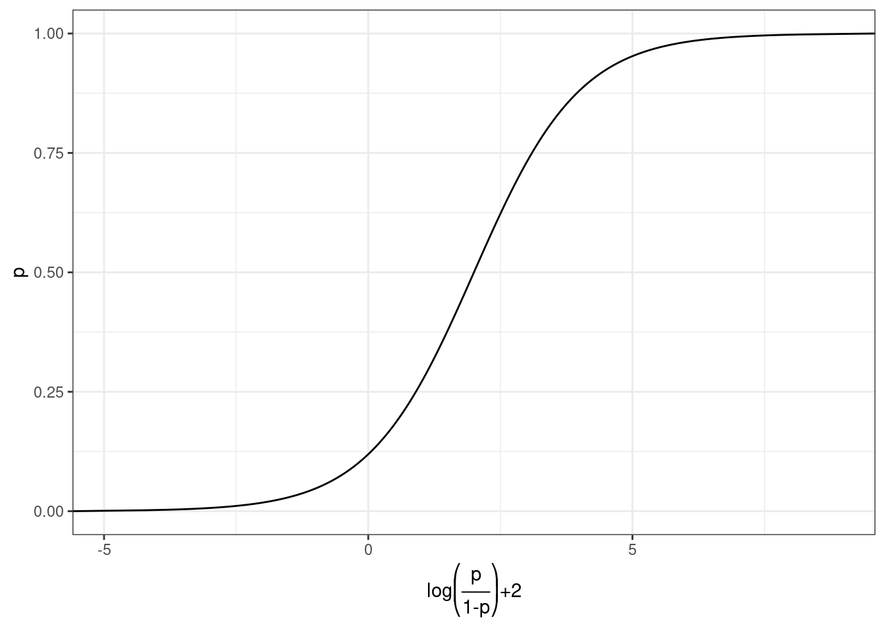
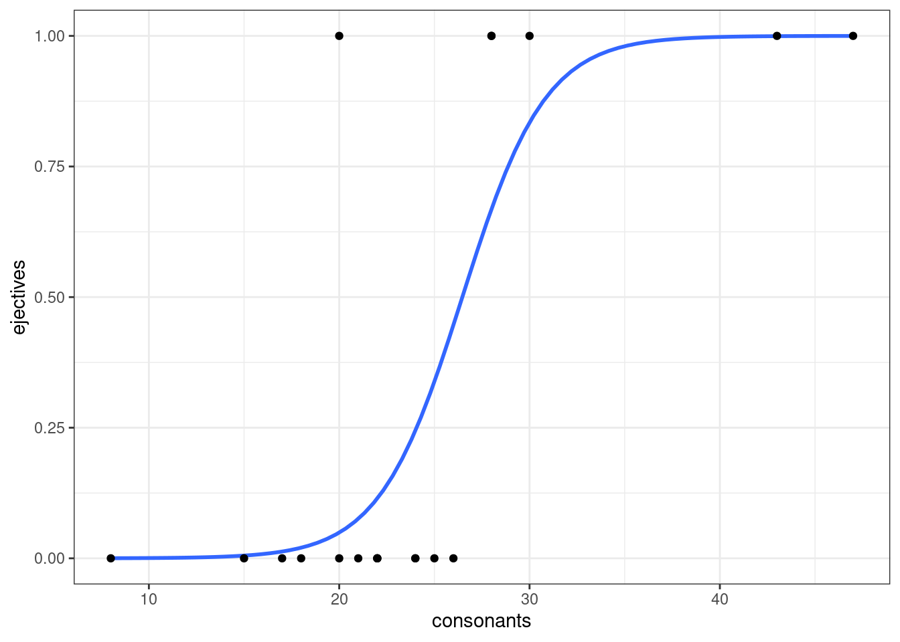
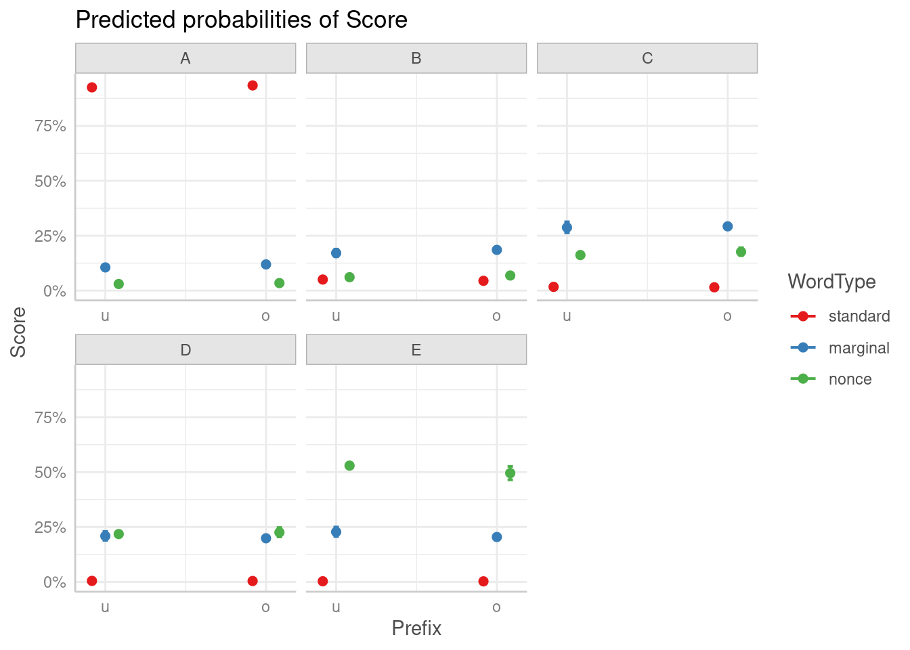

10 Логистическая, порядковая и мультиномиальная регрессия
library(tidyverse)Логистическая (logit, logistic) и мультиномиальная (multinomial) регрессия применяются в случаях, когда зависимая переменная является категориальной:
- с двумя значениями (логистическая регрессия)
- с более чем двумя значениями, упорядоченными в иерархию (порядковая регрессия)
- с более чем двумя значениями (мультиномиальная регрессия)
10.1 Логистическая регрессия
10.1.1 Теория
Мы хотим чего-то такого: \[\underbrace{y}_{[-\infty, +\infty]}=\underbrace{\mbox{β}_0+\mbox{β}_1\cdot x_1+\mbox{β}_2\cdot x_2 + \dots +\mbox{β}_k\cdot x_k +\mbox{ε}_i}_{[-\infty, +\infty]}\] Вероятность — отношение количества успехов к общему числу событий: \[p = \frac{\mbox{# успехов}}{\mbox{# неудач} + \mbox{# успехов}}, p \in [0, 1]\] Шансы — отношение количества успехов к количеству неудач: \[odds = \frac{p}{1-p} = \frac{p\mbox{(успеха)}}{p\mbox{(неудачи)}}, odds \in [0, +\infty]\] Натуральный логарифм шансов: \[\log(odds) \in [-\infty, +\infty]\]
Но, что нам говорит логарифм шансов? Как нам его интерпретировать?
tibble(n = 10,
success = 1:9,
failure = n - success,
prob.1 = success/(success+failure),
odds = success/failure,
log_odds = log(odds),
prob.2 = exp(log_odds)/(1+exp(log_odds)))Как связаны вероятность и логарифм шансов: \[\log(odds) = \log\left(\frac{p}{1-p}\right)\] \[p = \frac{\exp(\log(odds))}{1+\exp(\log(odds))}\]
Логарифм шансов равен 0.25. Посчитайте вероятность успеха:
Как связаны вероятность и логарифм шансов:

10.1.2 Практика
В датасет собрано 19 языков, со следующими переменными:
language— переменная, содержащая языкtone— бинарная переменная, обозначающая наличие тоновlong_vowels— бинарная переменная, обозначающая наличие долгих гласныхstress— бинарная переменная, обозначающая наличие ударенияejectives— бинарная переменная, обозначающая наличие абруптивныхconsonants— переменная, содержащая информацию о количестве согласныхvowels— переменная, содержащая информацию о количестве гласных
phonological_profiles <- read_csv("https://raw.githubusercontent.com/agricolamz/2021_da4l/master/data/phonological_profiles.csv")
glimpse(phonological_profiles)Rows: 19
Columns: 8
$ language <chr> "Turkish", "Korean", "Tiwi", "Liberia Kpelle", "Tulu", "M…
$ tone <lgl> FALSE, FALSE, FALSE, TRUE, FALSE, FALSE, TRUE, FALSE, TRU…
$ long_vowels <lgl> TRUE, FALSE, FALSE, FALSE, TRUE, FALSE, TRUE, FALSE, TRUE…
$ stress <lgl> TRUE, TRUE, TRUE, FALSE, FALSE, TRUE, FALSE, TRUE, TRUE, …
$ ejectives <lgl> FALSE, FALSE, FALSE, FALSE, FALSE, FALSE, FALSE, FALSE, F…
$ consonants <dbl> 25, 21, 22, 22, 24, 20, 22, 24, 15, 18, 17, 8, 26, 28, 30…
$ vowels <dbl> 8, 11, 4, 12, 13, 6, 20, 12, 5, 11, 8, 5, 14, 6, 7, 7, 5,…
$ area <chr> "Eurasia", "Eurasia", "Australia", "Africa", "Eurasia", "…set.seed(42)
phonological_profiles %>%
ggplot(aes(ejectives, consonants))+
geom_boxplot(aes(fill = ejectives), show.legend = FALSE, outlier.alpha = 0)+
# по умолчанию боксплот рисует выбросы, outlier.alpha = 0 -- это отключает
geom_jitter(size = 3)10.1.2.1 Почему не линейную регрессию?
lm_0 <- lm(as.double(ejectives)~1, data = phonological_profiles)
lm_1 <- lm(as.double(ejectives)~consonants, data = phonological_profiles)
lm_0
Call:
lm(formula = as.double(ejectives) ~ 1, data = phonological_profiles)
Coefficients:
(Intercept)
0.3158 lm_1
Call:
lm(formula = as.double(ejectives) ~ consonants, data = phonological_profiles)
Coefficients:
(Intercept) consonants
-0.5389 0.0353 Первая модель: \[ejectives = 0.3158 \times consonants\] Вторая модель: \[ejectives = -0.5389 + 0.0353 \times consonants\]
phonological_profiles %>%
ggplot(aes(consonants, as.double(ejectives)))+
geom_point()+
geom_smooth(method = "lm")+
theme_bw()+
labs(y = "ejectives (yes = 2, no = 1)")10.1.2.2 Модель без предиктора
logit_0 <- glm(ejectives~1, family = "binomial", data = phonological_profiles)
summary(logit_0)
Call:
glm(formula = ejectives ~ 1, family = "binomial", data = phonological_profiles)
Deviance Residuals:
Min 1Q Median 3Q Max
-0.8712 -0.8712 -0.8712 1.5183 1.5183
Coefficients:
Estimate Std. Error z value Pr(>|z|)
(Intercept) -0.7732 0.4935 -1.567 0.117
(Dispersion parameter for binomial family taken to be 1)
Null deviance: 23.699 on 18 degrees of freedom
Residual deviance: 23.699 on 18 degrees of freedom
AIC: 25.699
Number of Fisher Scoring iterations: 4logit_0$coefficients(Intercept)
-0.7731899 table(phonological_profiles$ejectives)
FALSE TRUE
13 6 log(6/13) # β0[1] -0.77318996/(13+6) # p[1] 0.3157895exp(log(6/13))/(1+exp(log(6/13))) # p[1] 0.3157895Какой коэфициент логистической регрессии, мы получим, запустив модель, предсказывающую количество s-генитивов, если наши данные состоят из 620 s-генитивов из 699 генетивных контекстов?
Ответ округлите до трех и меньше знаков после запятой.
10.1.2.3 Модель c одним числовым предиктором
logit_1 <- glm(ejectives~consonants, family = "binomial", data = phonological_profiles)
summary(logit_1)
Call:
glm(formula = ejectives ~ consonants, family = "binomial", data = phonological_profiles)
Deviance Residuals:
Min 1Q Median 3Q Max
-1.08779 -0.49331 -0.20265 0.02254 2.45384
Coefficients:
Estimate Std. Error z value Pr(>|z|)
(Intercept) -12.1123 6.1266 -1.977 0.0480 *
consonants 0.4576 0.2436 1.878 0.0603 .
---
Signif. codes: 0 '***' 0.001 '**' 0.01 '*' 0.05 '.' 0.1 ' ' 1
(Dispersion parameter for binomial family taken to be 1)
Null deviance: 23.699 on 18 degrees of freedom
Residual deviance: 12.192 on 17 degrees of freedom
AIC: 16.192
Number of Fisher Scoring iterations: 6logit_1$coefficients(Intercept) consonants
-12.1123347 0.4576095 phonological_profiles %>%
mutate(ejectives = as.double(ejectives)) %>%
ggplot(aes(consonants, ejectives)) +
geom_smooth(method = "glm",
method.args = list(family = "binomial"),
se = FALSE)+
geom_point()
Какова вероятность, что в языке с 29 согласными есть абруптивные?
logit_1$coefficients(Intercept) consonants
-12.1123347 0.4576095 \[\log\left({\frac{p}{1-p}}\right)_i=\beta_0+\beta_1\times consinants_i + \epsilon_i\] \[\log\left({\frac{p}{1-p}}\right)=-12.1123347 + 0.4576095 \times 29 = 1.158341\] \[p = \frac{e^{1.158341}}{1+e^{1.158341}} = 0.7610311\]
# log(odds)
predict(logit_1, newdata = data.frame(consonants = 29)) 1
1.158341 # p
predict(logit_1, newdata = data.frame(consonants = 29), type = "response") 1
0.7610312 Какой логорифм шансов предсказывает наша модель для языка с 25 согласными (6 знаков после запятой)?
Какую вероятность предсказывает наша модель для языка с 25 согласными (6 знаков после запятой)?
10.1.2.4 Модель c одним категориальным предиктором
logit_2 <- glm(ejectives~area, family = "binomial", data = phonological_profiles)
summary(logit_2)
Call:
glm(formula = ejectives ~ area, family = "binomial", data = phonological_profiles)
Deviance Residuals:
Min 1Q Median 3Q Max
-1.66511 -0.55525 -0.00013 0.75853 1.97277
Coefficients:
Estimate Std. Error z value
(Intercept) 0.0000000000000001507 0.9999999999999996669 0.000
areaAustralia -18.5660685098632356471 6522.6386791216082201572 -0.003
areaEurasia -1.7917594692280549573 1.4719601443879741787 -1.217
areaNorth America 1.0986122886681095601 1.5275252316519465356 0.719
areaPapunesia -18.5660685098631290657 6522.6386791215281846235 -0.003
areaSouth America -18.5660685098637543433 4612.2020954414911102504 -0.004
Pr(>|z|)
(Intercept) 1.000
areaAustralia 0.998
areaEurasia 0.224
areaNorth America 0.472
areaPapunesia 0.998
areaSouth America 0.997
(Dispersion parameter for binomial family taken to be 1)
Null deviance: 23.699 on 18 degrees of freedom
Residual deviance: 15.785 on 13 degrees of freedom
AIC: 27.785
Number of Fisher Scoring iterations: 17logit_2$coefficients (Intercept) areaAustralia areaEurasia
0.00000000000000015067 -18.56606850986323564712 -1.79175946922805495731
areaNorth America areaPapunesia areaSouth America
1.09861228866810956006 -18.56606850986312906571 -18.56606850986375434331 table(phonological_profiles$ejectives, phonological_profiles$area)
Africa Australia Eurasia North America Papunesia South America
FALSE 2 1 6 1 1 2
TRUE 2 0 1 3 0 0log(1/6) # Eurasia[1] -1.791759log(3/1) # North America[1] 1.09861210.1.2.5 Множественная регрессия
logit_3 <- glm(ejectives~consonants+area, family = "binomial", data = phonological_profiles)
summary(logit_3)
Call:
glm(formula = ejectives ~ consonants + area, family = "binomial",
data = phonological_profiles)
Deviance Residuals:
Min 1Q Median 3Q Max
-1.54011 -0.18623 -0.00012 0.00023 1.53307
Coefficients:
Estimate Std. Error z value Pr(>|z|)
(Intercept) -21.1760 15.1089 -1.402 0.161
consonants 0.8137 0.5653 1.439 0.150
areaAustralia -16.2910 10754.0138 -0.002 0.999
areaEurasia -1.2069 3.9399 -0.306 0.759
areaNorth America 4.0966 4.8563 0.844 0.399
areaPapunesia -4.8995 10754.0184 0.000 1.000
areaSouth America -17.1162 7065.6839 -0.002 0.998
(Dispersion parameter for binomial family taken to be 1)
Null deviance: 23.6989 on 18 degrees of freedom
Residual deviance: 6.7901 on 12 degrees of freedom
AIC: 20.79
Number of Fisher Scoring iterations: 1810.1.2.6 Cравнение моделей
AIC(logit_0, logit_1, logit_2, logit_3)BIC(logit_0, logit_1, logit_2, logit_3)Выберите наилучшую модель согласно AIC и BIC:
Для того, чтобы интерпретировать коэффициенты нужно проделать трансформацию:
(exp(logit_1$coefficients)-1)*100(Intercept) consonants
-99.99945 58.02918 Перед нами процентное изменние шансов при увеличении независимой переменной на 1.
Было предложено много аналогов R\(^2\), например, McFadden’s R squared:
pscl::pR2(logit_1)fitting null model for pseudo-r2 llh llhNull G2 McFadden r2ML r2CU
-6.0958355 -11.8494421 11.5072132 0.4855593 0.4542765 0.6373812 Проанализируйте в датасете с языками связь количества сегментов и наличия ударения. Постройте регрессию, визуализируйте связь. Какой вывод вы можете сделать?
10.2 Порядковая логистическая регрессия
Данные взяты из исследования [Endresen, Janda 2015], посвященное исследованию маргинальных глаголов изменения состояния в русском языке. Испытуемые (70 школьников, 51 взрослый) оценивали по шкале Ликерта (1…5) приемлемость глаголов с приставками о- и у-:
- широко используемуе в СРЛЯ (освежить, уточнить)
- встретившие всего несколько раз в корпусе (оржавить, увкуснить)
- искусственные слова (ономить, укампить)
marginal_verbs <- read_csv("https://raw.githubusercontent.com/agricolamz/2021_da4l/master/data/marginal_verbs.csv")
head(marginal_verbs)Переменные в датасете:
- Gender
- Age
- AgeGroup — взрослые или школьники
- Education
- City
- SubjectCode — код испытуемого
- Score — оценка, поставленная испытуемым (A — самая высокая, E — самая низкая)
- GivenScore — оценка, поставленная испытуемым (5 — самая высокая, 1 — самая низкая)
- Stimulus
- Prefix
- WordType — тип слова: частотное, редкое, искусственное
- CorpusFrequency — частотность в корпусе
marginal_verbs$Score <- factor(marginal_verbs$Score)
levels(marginal_verbs$Score)[1] "A" "B" "C" "D" "E"ordinal <- MASS::polr(Score~Prefix+WordType+CorpusFrequency, data = marginal_verbs)
summary(ordinal)Call:
MASS::polr(formula = Score ~ Prefix + WordType + CorpusFrequency,
data = marginal_verbs)
Coefficients:
Value Std. Error t value
Prefixu 0.136619 0.05286365 2.584
WordTypenonce 1.340603 0.05692826 23.549
WordTypestandard -4.655327 0.12510542 -37.211
CorpusFrequency -0.001015 0.00007879 -12.876
Intercepts:
Value Std. Error t value
A|B -2.6275 0.0753 -34.8784
B|C -1.4531 0.0552 -26.3246
C|D -0.2340 0.0479 -4.8853
D|E 0.7324 0.0492 14.8986
Residual Deviance: 13138.47
AIC: 13154.47 ordinal$coefficients Prefixu WordTypenonce WordTypestandard CorpusFrequency
0.136619412 1.340602696 -4.655327418 -0.001014583 Как и раньше, можно преобразовать коэффициенты:
(exp(ordinal$coefficients)-1)*100 Prefixu WordTypenonce WordTypestandard CorpusFrequency
14.6391763 282.1345921 -99.0489201 -0.1014068 \[\log(\frac{p(A)}{p(B|C|D|E)}) = -2.6275 + 0.136619412 \times Prefixu +\]
\[+ 1.340602696 \times WordTypenonce -\]
\[-4.655327418 \times WordTypestandard - \]
\[ - 0.001014583\times CorpusFrequency\]
\[\log(\frac{p(A|B)}{p(C|D|E)}) = -1.4531 + 0.136619412 \times Prefixu + \]
\[ + 1.340602696 \times WordTypenonce-\]
\[-4.655327418 \times WordTypestandard -\]
\[ -0.001014583\times CorpusFrequency\]
\[\log(\frac{p(A|B|C)}{p(D|E)}) = -0.2340 + 0.136619412 \times Prefixu + \]
\[ + 1.340602696 \times WordTypenonce-\]
\[-4.655327418 \times WordTypestandard - \]
\[-0.001014583\times CorpusFrequency\]
\[\log(\frac{p(A|B|C|D)}{p(E)}) = 0.7324 + 0.136619412 \times Prefixu +\] \[ + 1.340602696 \times WordTypenonce-\] \[-4.655327418 \times WordTypestandard -\] \[=0.001014583\times CorpusFrequency\]
head(predict(ordinal))[1] A A E E A A
Levels: A B C D Ehead(predict(ordinal, type = "probs")) A B C D E
1 0.99178000 0.005665533 0.001798242 0.0004683707 0.0002878525
2 0.93841926 0.041706786 0.013917668 0.0036817261 0.0022745617
3 0.06764594 0.122509282 0.252611927 0.2334448870 0.3237879649
4 0.01855865 0.039108932 0.113894002 0.1808984667 0.6475399508
5 0.90986002 0.060436871 0.020738032 0.0055351143 0.0034299624
6 0.91496678 0.057117954 0.019500629 0.0051963745 0.0032182669marginal_verbs %>%
bind_cols(as_tibble(predict(ordinal, type = "probs"))) %>%
gather(score, predictions, A:E) %>%
ggplot(aes(x = score, y = predictions, fill = score)) +
geom_col(position = "dodge")+
facet_grid(Prefix~WordType)library(ggeffects)
ordinal %>%
ggpredict(terms = c("Prefix", "WordType")) %>%
plot()
10.3 Мультиномиальная регрессия
В этом датасете представлены три нанайских гласных i, ɪ и e, произнесенные нанайским носителем мужского пола из селения Джуен. Каждая строчка — отдельное произнесение. Переменные:
- f1 — первая форманта
- f2 — вторая форманта
nanai <- read_csv("https://raw.githubusercontent.com/agricolamz/2021_da4l/master/data/nanai_vowels.csv")
nanai %>%
ggplot(aes(f2, f1, label = sound, color = sound))+
geom_text()+
geom_rug()+
scale_y_reverse()+
scale_x_reverse()+
stat_ellipse()+
theme_bw()+
theme(legend.position = "none")+
labs(title = "Нанайские гласные в произнесении мужчины из селения Джуен")mult <- nnet::multinom(sound~f1+f2, data = nanai)# weights: 12 (6 variable)
initial value 462.515774
iter 10 value 51.522626
iter 20 value 46.817442
iter 30 value 44.829080
iter 40 value 44.807654
iter 40 value 44.807654
final value 44.807654
convergedmultCall:
nnet::multinom(formula = sound ~ f1 + f2, data = nanai)
Coefficients:
(Intercept) f1 f2
i -22.85202 -0.04263175 0.02315226
ɪ -41.46147 0.02360077 0.01937067
Residual Deviance: 89.61531
AIC: 101.6153 \[\log(\frac{p(e)}{p(ɪ)}) = -41.46147 + 0.02360077\times f1 +0.01937067\times f2\] \[\log(\frac{p(i)}{p(ɪ)}) = -22.85202 -0.04263175\times f1 + 0.02315226\times f2\]
nanai %>%
mutate(prediction = predict(mult),
correctness = sound == prediction) %>%
ggplot(aes(f1, f2, label = sound, color = correctness))+
geom_text(aes(size = !correctness), show.legend = FALSE)+
scale_y_reverse()+
scale_x_reverse()+
theme_bw()+
labs(title = "Нанайские гласные в произнесении мужчины из селения Джуен",
subtitle = "мультиномиальная регрессия")